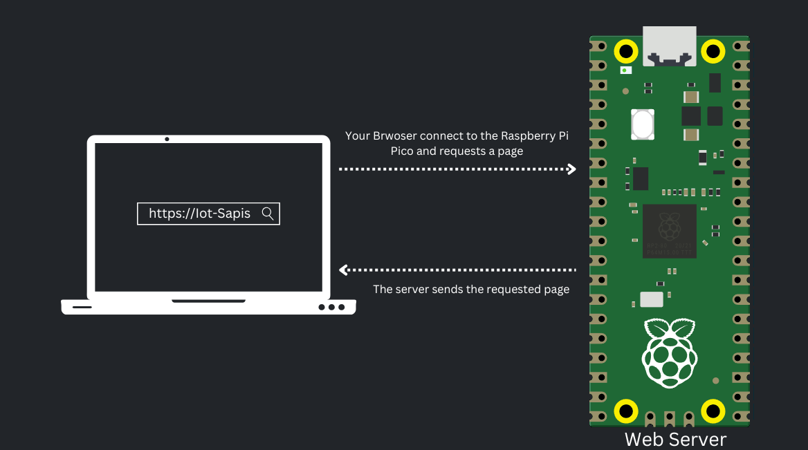
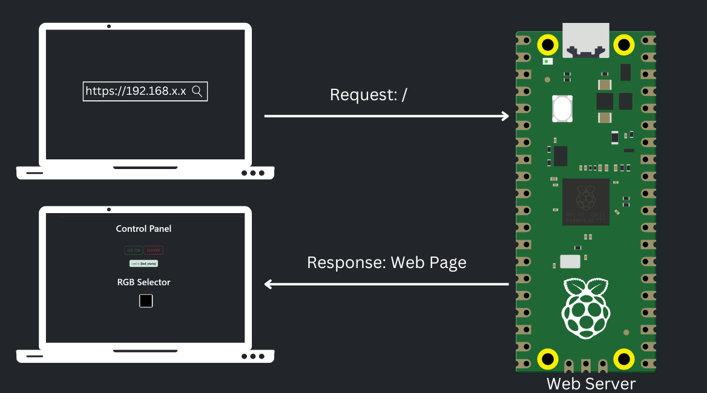
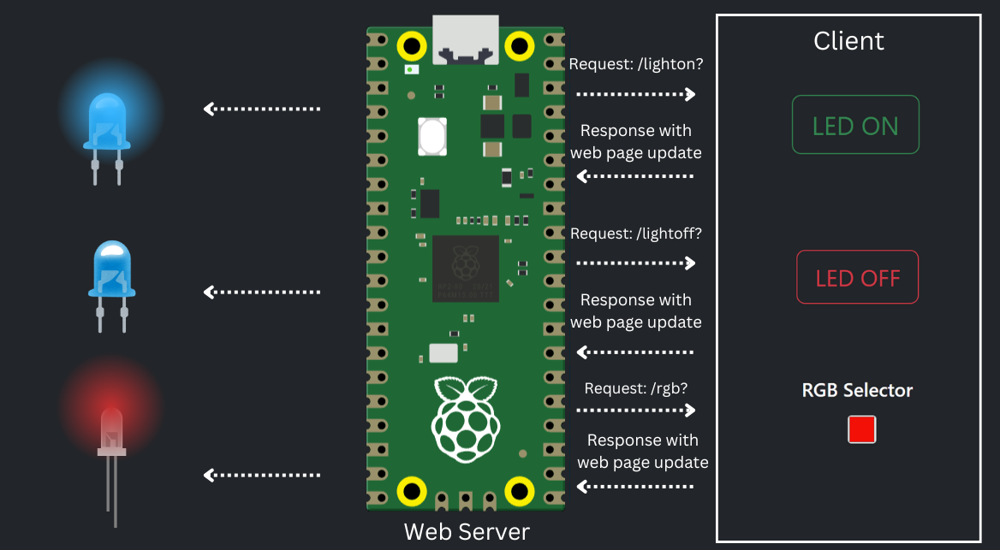
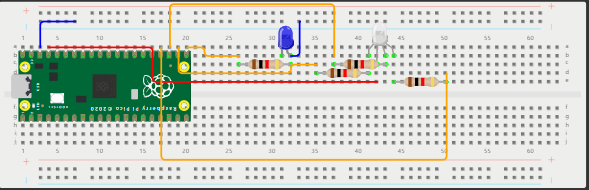

The Raspberry Pi Pico as a Web Server

In simple terms, a web server is a "computer" that provides web pages. It stores the website files, including all HTML documents and related assets like images, CSS, JavaScript, fonts, or other files. It also brings those files to the user web browser device when the user makes a request to the server.
How it works?
When you access the Raspberry Pi Pico's address in your web browser, you're sending a request to the root URL of the Raspberry Pi Pico. Upon receiving this request, the Pico responds by sending the HTML required to construct the web page displayed in the browser.

When you (the client) enter the Raspberry Pi Pico address on your web browser, you are making a request to the Raspberry Pi Pico on the root URL. When it receives that request, it responds with the HTML to build the web page we have seen previously.

Circuit

How does the code work?
This Python file defines the control logic for the IoT project, including management of an RGB LED, a simple LED, as well as an integrated web server for interaction.
Imports and initial setup:
import time
import network # type: ignore
import socket
import ujson # type: ignore
from machine import Pin, PWM # type: ignore
set_rgb_color function:
Converts to a HEX color to RGB component adjusting the values for a 16-bit range
def set_rgb_color(hex_color):
r = int(hex_color[0:2], 16)
g = int(hex_color[2:4], 16)
b = int(hex_color[4:6], 16)
rgb_red.duty_u16(int(r / 255 * 65535))
rgb_green.duty_u16(int(g / 255 * 65535))
rgb_blue.duty_u16(int(b / 255 * 65535))
File reading:
Reads the configuration files or static files and return the content
def get_file(file_name, encoding_type=None):
try:
if 'json' in file_name:
with open(file_name, 'r', encoding=encoding_type) as secrets:
file_content = ujson.load(secrets)
return file_content
else:
with open(file_name, 'r', encoding=encoding_type) as file:
file_content = file.read()
return file_content
except FileNotFoundError:
print(f"Error: The file {file_name} was not found.")
return None
Wifi setup:
Reads WiFi credentials from connections.json file and connects to the WiFi network
wlan = network.WLAN(network.STA_IF)
wlan.active(True)
wlan.connect(ssid, password)
Web Server Initialization:
Creates a socket to listen on port 80 (HTTP) in order to handle HTTP requests
addr = socket.getaddrinfo("0.0.0.0", 80)[0][-1]
s = socket.socket()
s.bind(addr)
s.listen(1)
Handling HTTP Requests:
Proccess the HTTP request for: led=on, led=off or rgb=HEX
if "led=on" in request:
led.value(1)
cl.send("HTTP/1.0 302 Found\r\nLocation: /\r\n\r\n")
if "led=off" in request:
led.value(0)
cl.send("HTTP/1.0 302 Found\r\nLocation: /\r\n\r\n")
if "rgb=" in request:
rgb_value = request.split("rgb=")[-1][:6]
set_rgb_color(rgb_value)
cl.send("HTTP/1.0 302 Found\r\nLocation: /\r\n\r\n")
Serving Files to the client:
This function serves CSS and JavaScript files when requested and HTML file with the current state of request
if "GET /styles.css" in request:
cl.send("HTTP/1.0 200 OK\r\nContent-type: text/css\r\n\r\n")
cl.sendall(css)
elif "GET /script.js" in request:
cl.send("HTTP/1.0 200 OK\r\nContent-type: application/javascript\r\n\r\n")
cl.sendall(script)
elif "GET /" in request:
response = html.format(led_state=ledState)
cl.send("HTTP/1.0 200 OK\r\nContent-type: text/html\r\n\r\n")
cl.sendall(response)
WLAN code:
0: WLAN is not enabled
1: WLAN is currently scanning for networks
2: WLAN is connecting to a network
3: WLAN is connected to a network
4: WLAN failed to connect to a network